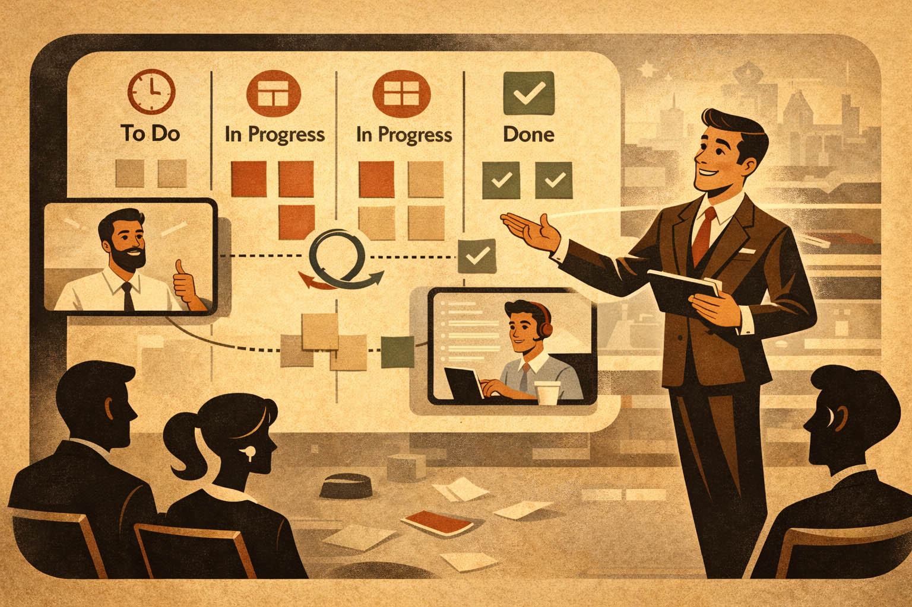
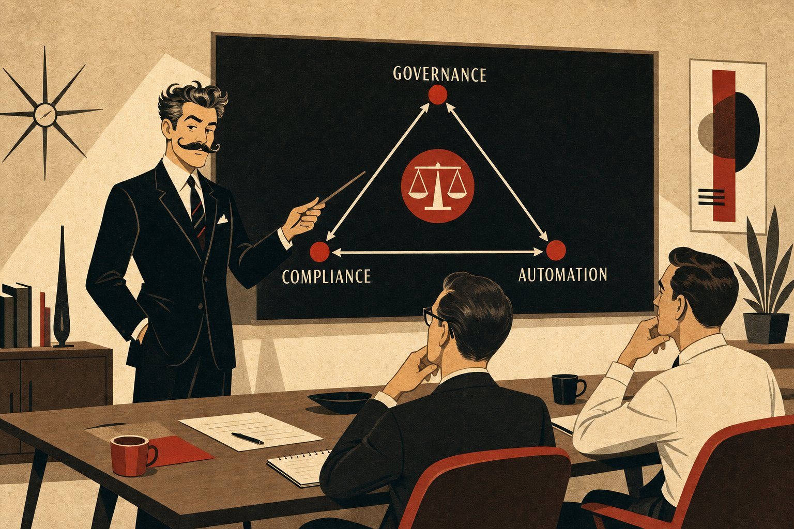
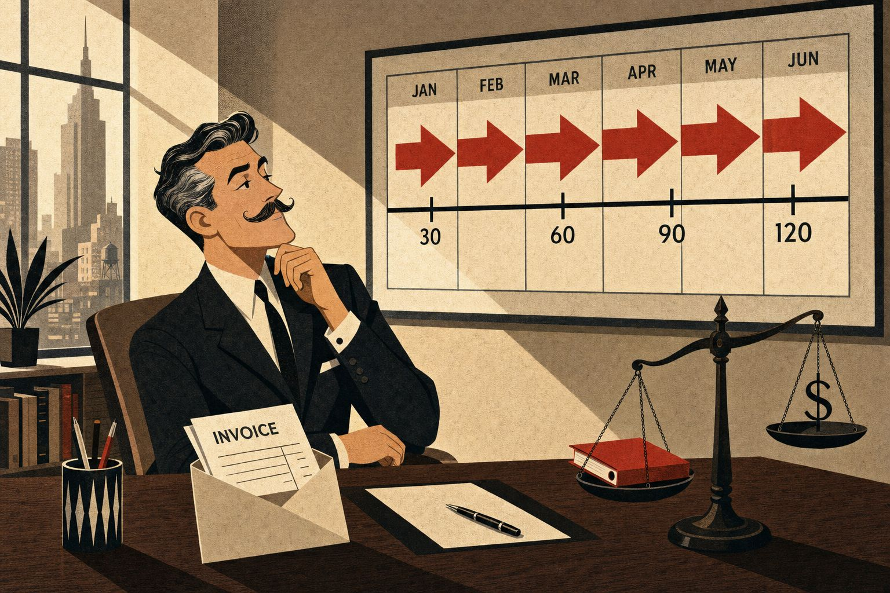
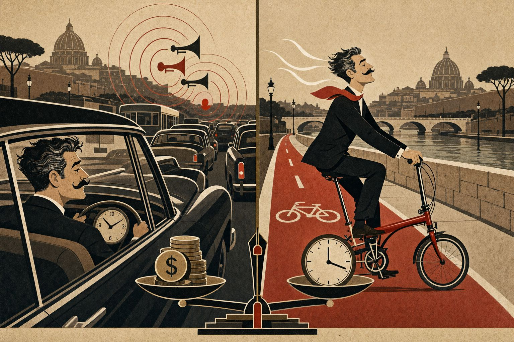
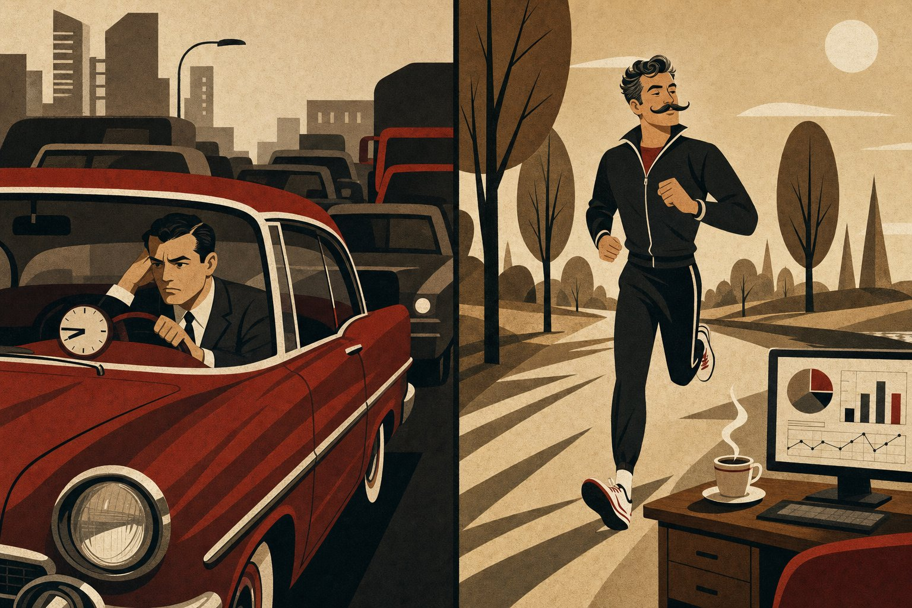
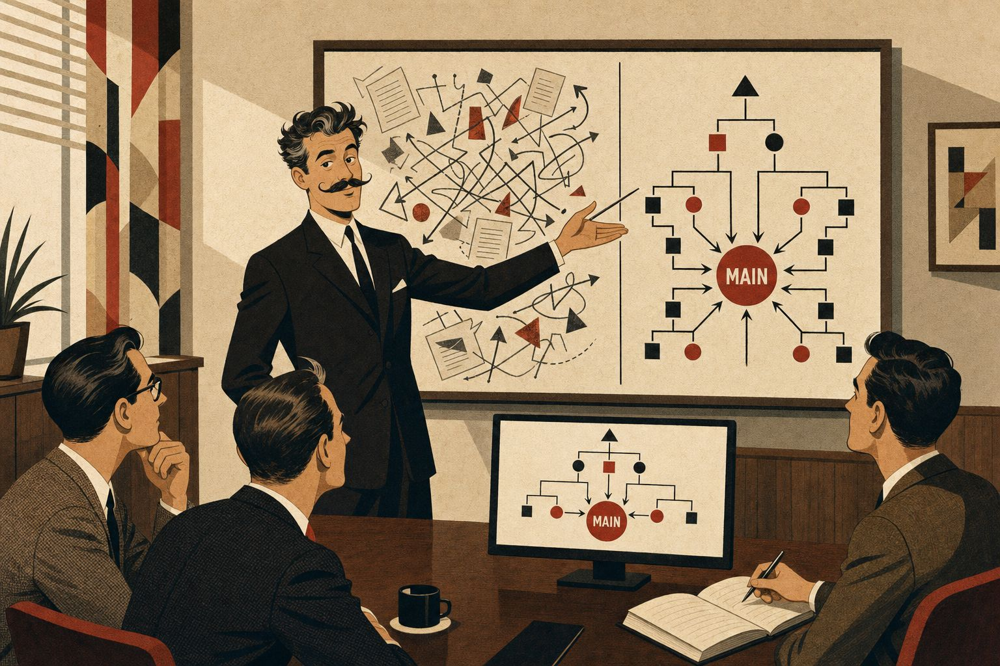

Project Management
Gestione di progetto nell'IT: smart working, Scrum, AI e consulenza. Articoli pratici da trent'anni di esperienza sul campo.
Ho visto project manager far piangere sviluppatori senior in riunione. Ho visto team brillanti distrutti da PM che confondevano l'autorità con l'autoritarismo. Ho visto software consegnati "in tempo" che non funzionavano, e progetti da milioni di euro finiti nel nulla.
E ho visto l'esatto contrario: team piccoli, autonomi, rispettati — che costruivano sistemi solidi in una frazione del tempo e del budget.
La differenza non è mai stata la tecnologia. È sempre stata il metodo.
Dopo trent'anni in questo mestiere, una cosa l'ho capita: le persone non danno il meglio quando hanno paura. Danno il meglio quando hanno fiducia.
Fiducia nel team. Fiducia nel processo. Fiducia nel fatto che se sbagliano non verranno punite — verranno aiutate.
📊 Come lavoro io
Il mio approccio è Scrum — ma Scrum fatto sul serio, non la liturgia dei post-it. Misuro poche cose, ma le misuro bene:
| Metrica | Cosa dice |
|---|---|
| Velocity | Quanto il team consegna per sprint |
| Lead time | Quanto passa da richiesta a rilascio |
| Bug escape rate | Quanti difetti sfuggono in produzione |
| Team happiness | Come si sente il team — la metrica più importante |
Non servono rivoluzioni. Servono scelte precise, implementate con metodo. E la capacità di dire "no" a chi ti vende complessità quando la soluzione è semplice.
Articoli

5 regole che ho visto funzionare nei team di progetto che reggono
Cinque regole osservate da entrambi i lati del tavolo — consulente e responsabile — nei team che tengono sotto pressione.

AI Manager e Project Management: quando l'intelligenza artificiale entra nei progetti
Gestire l'AI non significa usare ChatGPT. Significa governare l'impatto su architetture, processi e persone.

Pagamenti a 60-90-120 giorni: la normalità italiana che in Europa non esiste
Confronto diretto tra regole europee e realtà italiana, con numeri, direttive e strategie per chi lavora a partita IVA.

Bici vs Auto a Roma: la mattina che mi ha aperto gli occhi
Da Appio Latino a Prati in 50 minuti di traffico o 18 minuti di Brompton elettrica. La scelta che ha cambiato le mie giornate.

Smart working nella consulenza IT: i numeri che nessuno vuole guardare
Analisi concreta sulla convenienza economica del lavoro da remoto, con i numeri veri e il raccordo anulare di Roma.

Quando il caos diventa metodo: AI e GitHub per gestire un progetto che nessuno voleva toccare
Come AI e GitHub trasformano un progetto software caotico in un flusso di lavoro ordinato e misurabile.